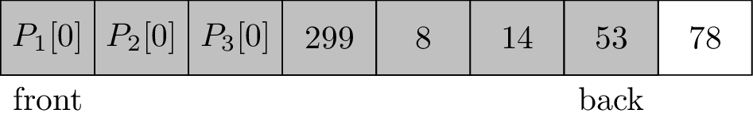

\documentclass{standalone}
\usepackage{tikz}
\usetikzlibrary{calc}
\def\cells#1#2#3{%
% #1 = total number of cells
% #2 = number of grey cells
% #3 = index for "front" ("back" is mod(#3+#2-1, #1))
\foreach [count=\i from 0] \j in {1,...,#1} {
% \node[cell,label=above:\i] (cell\i) at (\i,0) {};
\node[cell] (cell\i) at (\i,0) {};
}
\pgfmathsetmacro{\last}{#3+#2-1}
\foreach \i in {#3,...,\last} {
\pgfmathsetmacro{\back}{mod(\i,#1)}
\node[shaded cell] (back) at (\back,0) {};
}
\node[below] at (cell#3.south) {front};
\node[below] at (back.south) {back};
}
\tikzset{
cell/.style = {draw, minimum width=1cm, minimum height=0.8cm},
shaded cell/.style = {cell, fill=black!30},
}
\begin{document}
%\begin{tikzpicture}
%\cells{6}{3}{0}
%\end{tikzpicture} \\
%
%\begin{tikzpicture}
%\cells{6}{3}{3}
%\end{tikzpicture} \\
%
%\begin{tikzpicture}
%\cells{6}{3}{4}
%\end{tikzpicture} \\
\begin{tikzpicture}
\cells{8}{7}{0}
\foreach [count=\i from 0] \number in {$P_1[0]$, $P_2[0]$, $P_3[0]$, 299, 8, 14, 53, 78}
\node at (cell\i) {\number};
\end{tikzpicture}
\end{document}Created by David Li